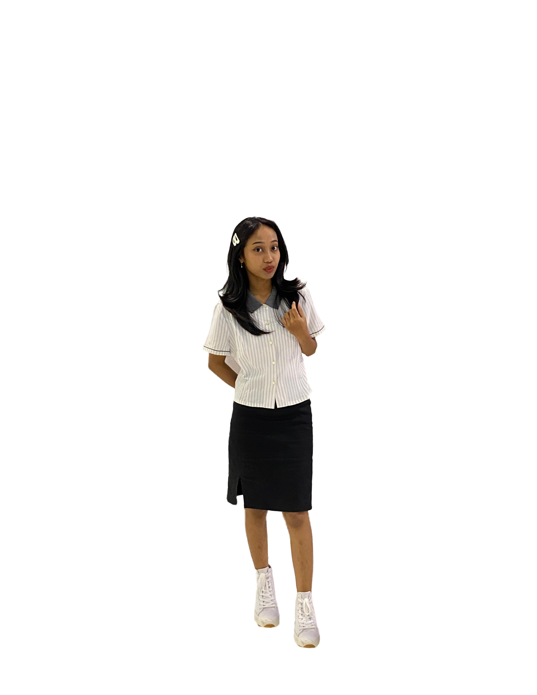
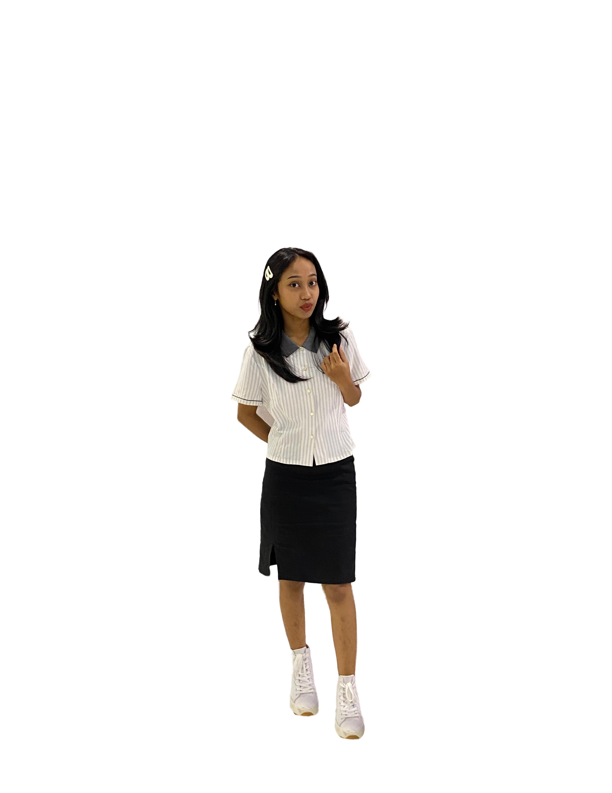
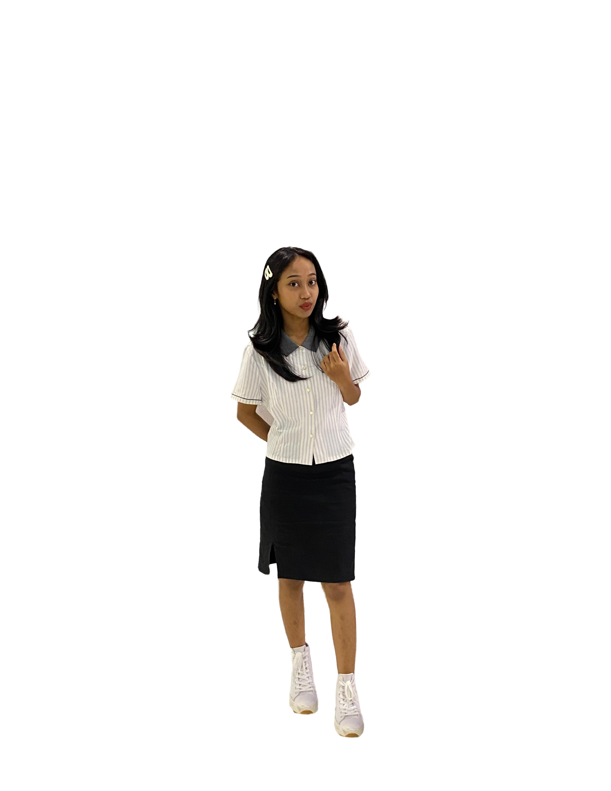

Hi, It's Serena
I'm a Student
Sistem Informasi Universitas Pembangunan Jaya

Sistem Informasi Universitas Pembangunan Jaya
Halo! 🌟 Saya Serena Mariana Lalang Puling (2024081021) mahasiswa semester 1 di Program Studi Sistem Informasi Universitas Pembangunan Jaya. 🎓 Saya memiliki hobi mendengarkan musik 🎶 yang tidak hanya membantu saya bersantai, tetapi juga memicu kreativitas dan inspirasi. ✨ Saya sangat antusias untuk mengeksplorasi lebih dalam tentang sistem informasi 💻 dan berharap bisa memberikan kontribusi yang berarti di bidang ini di masa depan. Terima kasih telah mengunjungi halaman saya! 😊
September 2024 - Present
In my position as Vice Chair at Concordia, I assist in leadership and organizational responsibilities, collaborating with team members to ensure effective project execution and community involvement.
September 2024 - Present
As a Student Ambassador, I represent my institution at various events, fostering community engagement and promoting our campus to prospective students and stakeholders.
September 2024 - Present
In my role at Dakauri, I focus on enhancing human resource capabilities, contributing to the growth and development of team members through targeted initiatives.